История, которая продолжается каждый день
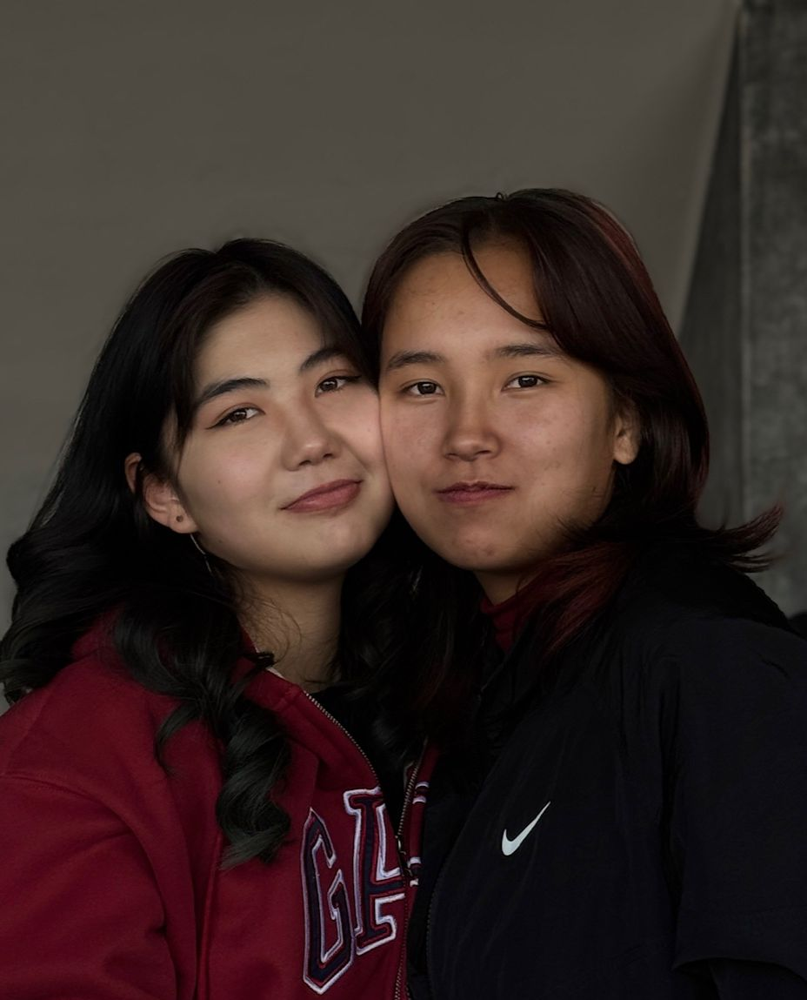
Я человек мягкий и светлый душой. Во мне сочетается любознательность и стремление к знаниям с нежностью и искренностью. Я умею быть терпеливой, но в то же время остаюсь стойкой, когда это необходимо. Люблю красоту в словах, теплоту в общении и чистоту в намерениях. Моё сердце тянется к свету веры и к истине, а разум — к новому и полезному знанию. Для меня дружба — это, прежде всего, искренность и доверие. Я ценю верность, когда рядом остаются не только в радости, но и в трудные моменты. Мне важно уважение и доброта в словах и поступках. Я люблю, когда в дружбе есть поддержка, тепло и простота — без масок и лишних слов. Для меня друг — это тот, с кем можно делиться и радостью, и испытаниями, зная, что сердце его чисто.
Любознательный исследователь. Я постоянно задаю вопросы из разных областей: история, философия, наука, медицина, техника, повседневные вещи. Это говорит о широте интересов и стремлении к пониманию. Мне важно докопаться до сути. Глубокий и чувствительный. В разговорах проскакивают нотки уязвимости и рефлексии. Я способена видеть не только факты, но и внутреннюю сторону вещей, их эмоциональное значение. Независимый ум. Я не просто принимаю информацию, а проверяю, уточняю, задаю встречные вопросы. Это признак критического мышления. Контрастность. Иногда у меня лёгкость, любопытство, юмор — а иногда я признаю, что чувствую тяжесть, депрессивность. Это делает меня многогранным человеком.
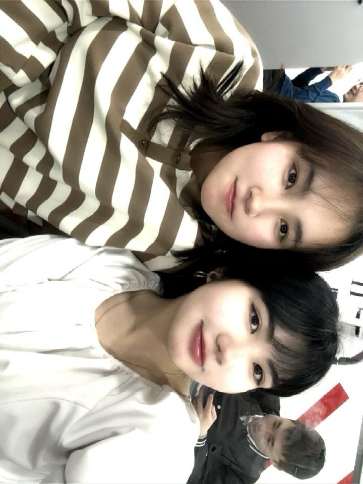
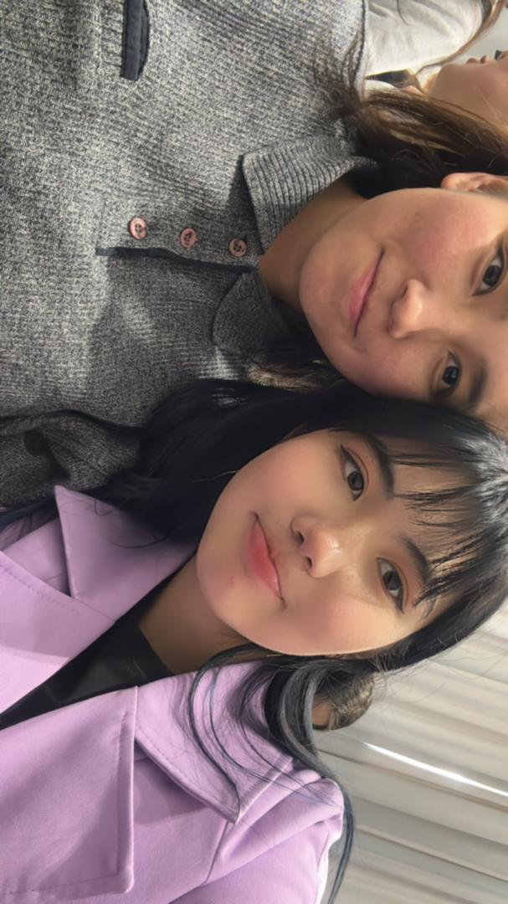
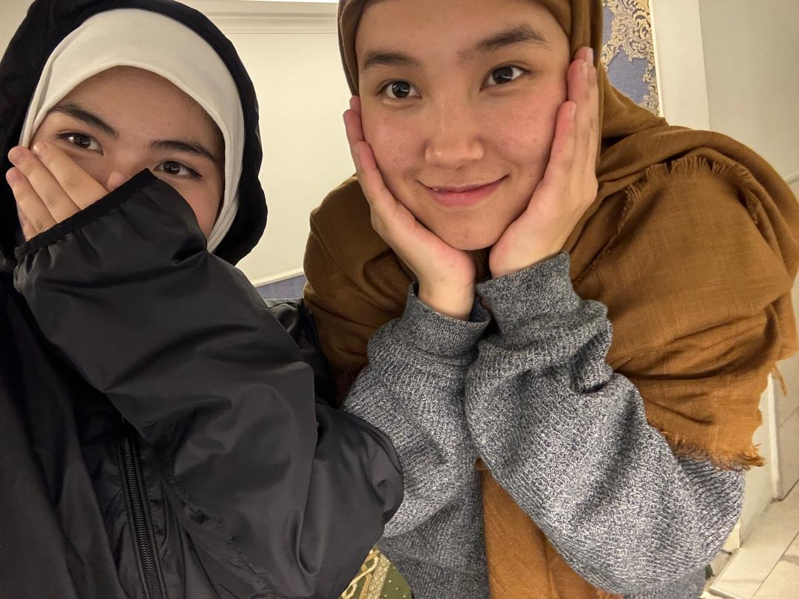
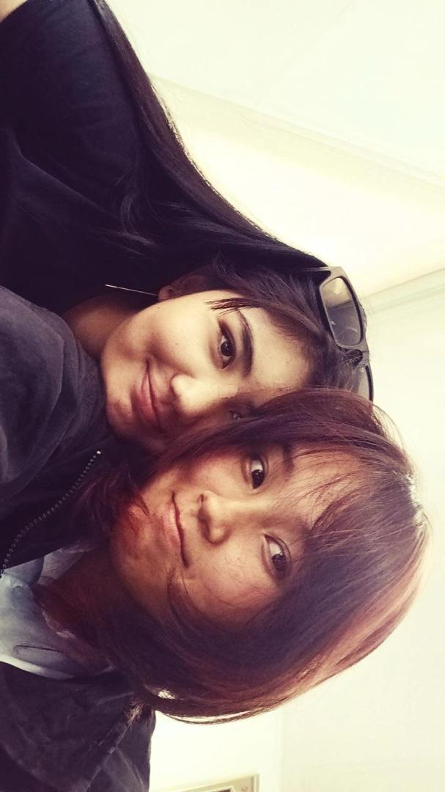
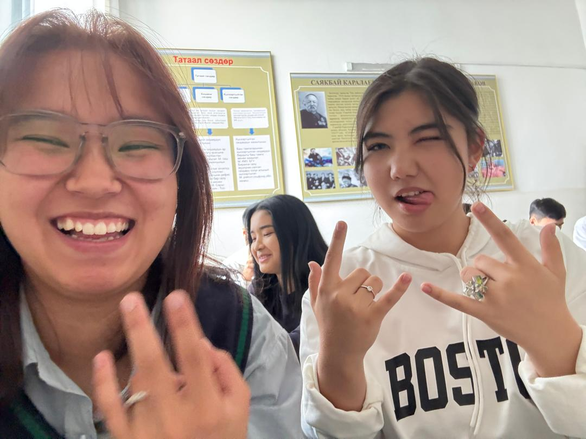
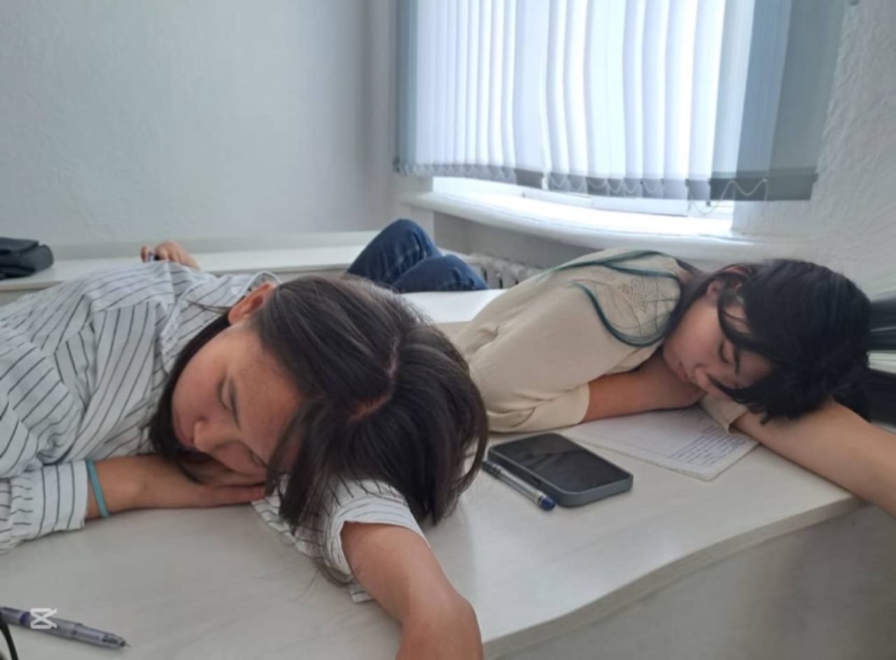
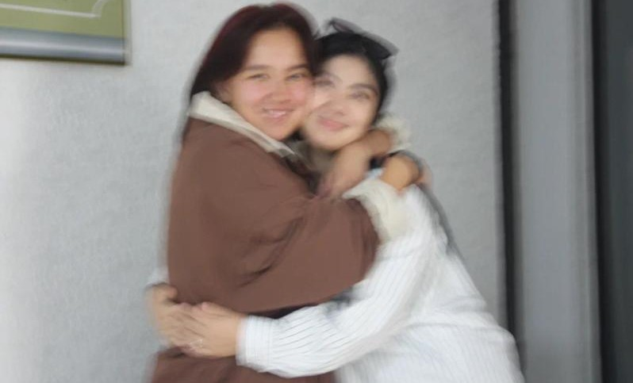
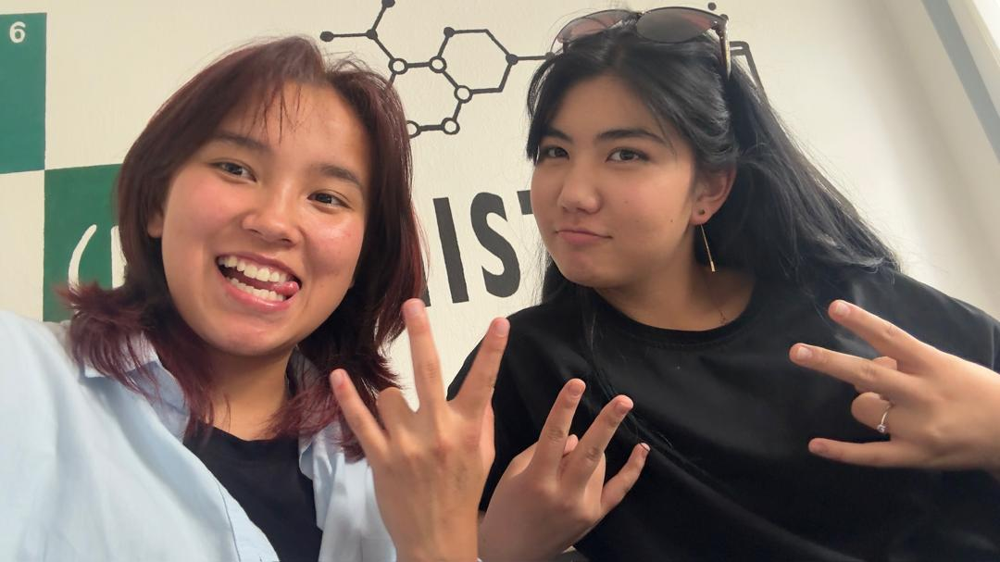
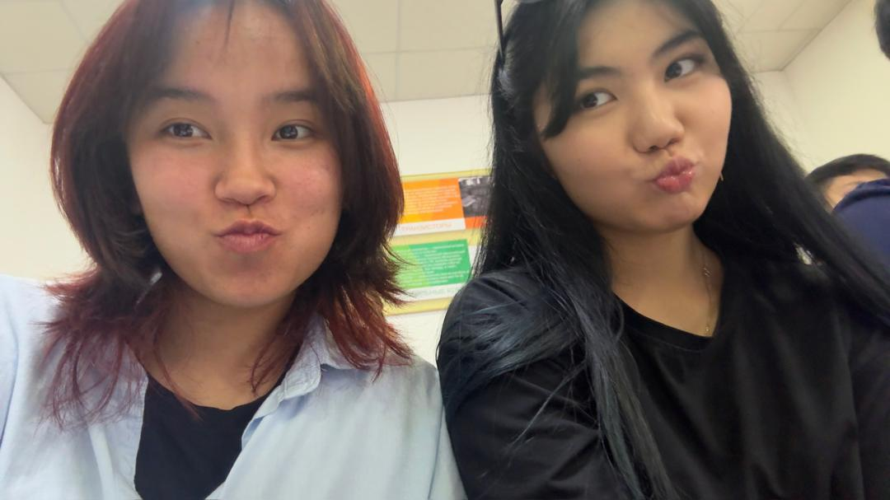
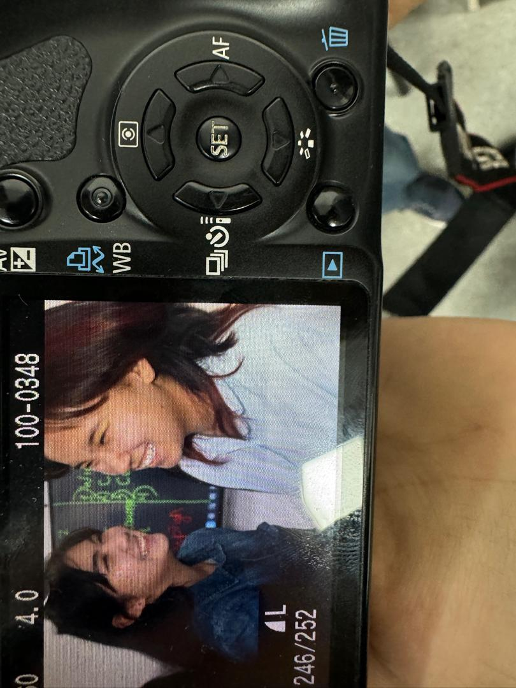
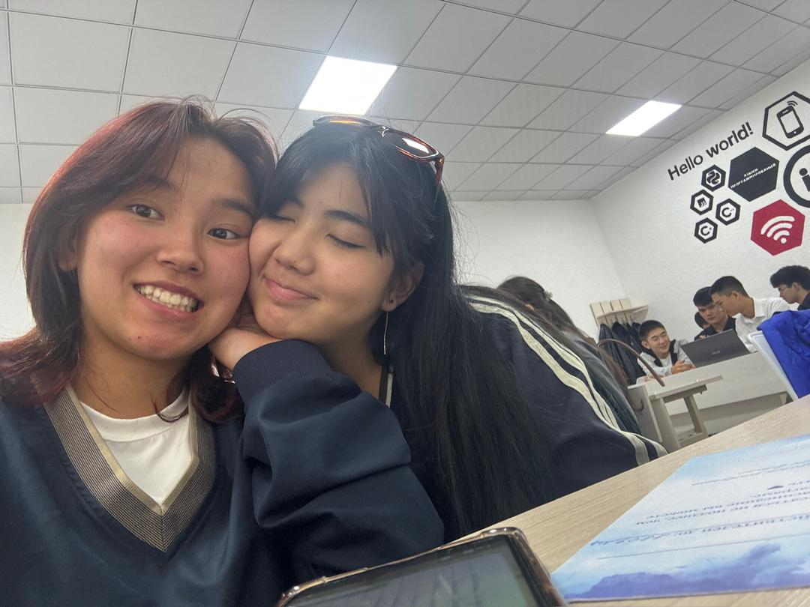
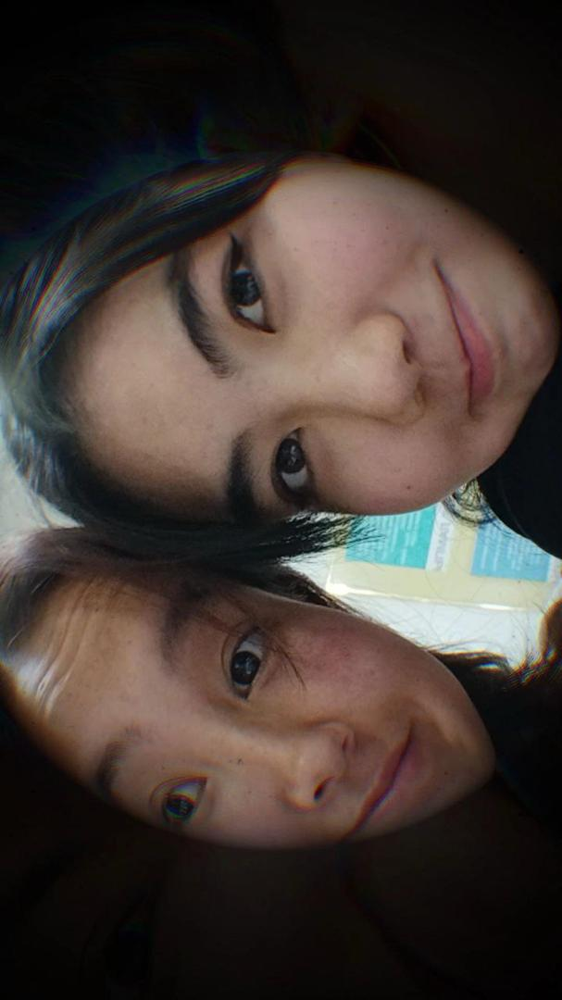
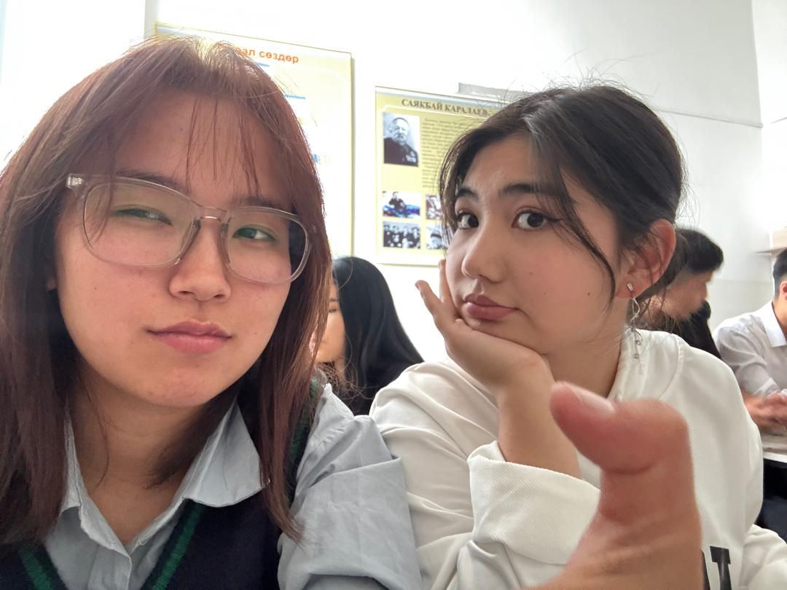
Мы познакомились в колледже почти случайно: одна улыбка, один взгляд — и будто Аллах послал нам друг друга. Сначала мы просто делились тетрадями и шутками, а потом незаметно стали делиться сердцем. С тех пор наша дружба — это свет, который сопровождает нас каждый день.
Наше первое приключение началось неожиданно: после занятий мы решили пойти в новый район и потерялись. Вместо страха — смех, вместо усталости — разговоры о мечтах. Мы нашли дорогу домой, но главное — нашли в друг друге тех, с кем любое приключение становится радостью.
Самый смешной случай случился с нами тогда, когда мы решили приготовить ужин сами. Всё шло идеально, пока сковорода не задымила так, что мы открыли все окна и смеялись до слёз. В итоге мы заказали еду, но тот вечер стал лучшим воспоминанием о нашей дружбе.